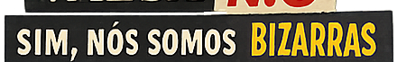
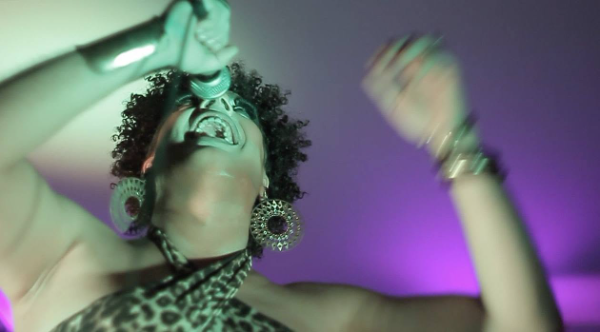
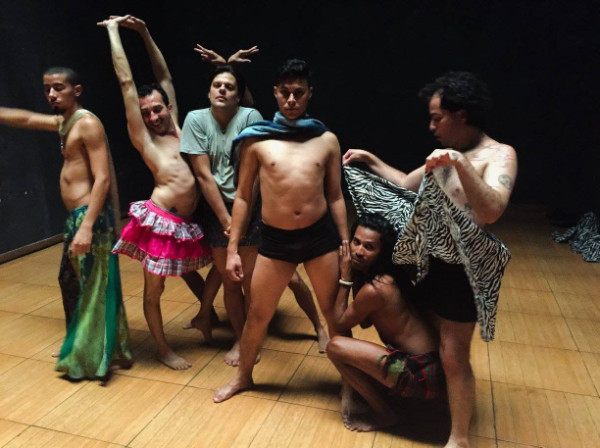
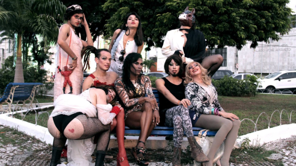

Drag queen

(co-direção artística)
2014–2015
Co-direção artística do projeto concebido por Princesa Ricardo Marinelli, financiado pelo Rumos Itaú Cultural. Ações em Curitiba, São Paulo, Natal e Porto Alegre.
Assumi a direção artística do Sim, nós somos bizarras no meio do processo. O projeto reunia artistas LGBTQIA+ de quatro cidades, com mostras de trabalhos, oficinas, mesas de debate e ações performáticas em cada uma delas.
“Acho é um convite e um enfrentamento. É dizer: ‘olha, a gente existe, estamos aqui, se quiser saber o que a gente tá fazendo, venha ver’.”
sobre Sim, nós somos bizarras · Correio Braziliense, 2015
Leia a matéria de Renata Rios no Correio Braziliense

Sim, nós somos bizarras. São Luís, 2015. Foto: ABOCA Audiovisual.

Sim, nós somos bizarras. São Luís, 2015. Foto: ABOCA Audiovisual.

Intervenção urbana com artistas residentes. Projeto “Sim, somos bizarras”, Natal, 2020.
26